Jeder Post ist durch drei Prüfrunden gegangen: skeptischer Vermittler, LinkedIn-Stratege, Recht und Marke. In Runde 1 lagen die Noten bei 6,1 bis 7,9. Die Schwelle ist 9 im Schnitt und nirgends unter 8.
Tippe auf „… mehr anzeigen“, um den ganzen Text zu lesen. Die Reihenfolge entspricht dem Plan.
Veröffentlichungsplan
Sa 28.11. · 8:00 · veröffentlichtHaltung „200.000 Leads“, zum Post
Ole KannapinnGründer performancegrowth · Neukunden für Versicherungsvermittler
Über 200.000 Leads im Versicherungsbereich.
Und ich habe lange das Falsche gezählt.
So viele Anfragen haben wir seit 2019 erzeugt, zusammengezählt über alle Kampagnen. Eine große Zahl. Sie sagt nur nichts darüber, wie viele Gespräche daraus geworden sind.
Ich mache seit 2014 Online-Marketing. Mein Gedanke war: Wenn die Anzeige gut ist und der Leadpreis stimmt, läuft der Rest von allein.
Tut er nicht.
Ein Lead war für mich fertig, sobald er beim Vermittler ankam. Was danach passierte, habe ich zu selten gefragt. Das war mein Fehler.
Was Vermittler über gekaufte Leads erzählen, kennen Sie: mehrfach verkauft, nie erreicht, am Ende Storno. Und selbst gute Anfragen bleiben liegen, weil niemand sonntags um 21 Uhr am Telefon sitzt.
Ich verstehe jeden, der beim Wort Lead die Augen verdreht.
Deshalb verkaufen wir Vermittlern keine Rohleads mehr. Unser Ziel ist der Termin, nicht die Adresse.
Die Werbung läuft in Ihrem Namen.
Jede Anfrage geht nur an Sie. Sie wird nicht weiterverkauft.
Ein KI-Assistent meldet sich per WhatsApp, in der Regel in unter einer Minute. Er fragt nach dem Bedarf und bietet Termine aus Ihrem Kalender an.
In unserer nachgestellten Demo steht der Termin 9 Minuten nach dem Formular.
Die Beratung bleibt bei Ihnen.
Was ärgert Sie an gekauften Leads am meisten?
Mehrfach verkauft, nie erreicht oder am Ende Storno?
#Versicherungsvermittler #Neukundengewinnung
OK
Ole KannapinnErster Kommentar
Kurz zu mir: Ich bin seit 2014 im Online-Marketing und seit 2019 im Versicherungsbereich. In den nächsten Wochen zeige ich hier offen, wie unser Ablauf funktioniert, auch die Stellen, an denen es nicht glattläuft. Wenn Sie ein Thema dazu haben, schreiben Sie es gern drunter.
2. Mi 02.12. · 7:45 UhrKarussell
OK
Ole KannapinnGründer performancegrowth · Neukunden für Versicherungsvermittler
„Nicht erreichbar trotz mehrfacher Anrufversuche.“
Kennen Sie den Satz aus Reklamationen?
Manche Leads sind schlicht schlecht. Falsche Nummer, mehrfach verkauft. Gegen Mehrfachverkauf hilft nur, dass jede Anfrage bei genau einem Vermittler landet.
Aber ich habe auch viele gute Anfragen scheitern sehen. Meiner Erfahrung nach selten am Formular. Meistens an den Stunden danach.
Genau um diese Stunden kümmern wir uns: Wir schalten für Vermittler Anzeigen auf Facebook und Instagram unter ihrem eigenen Namen, und auf jede Anfrage schreibt ein KI-Assistent per WhatsApp, in der Regel in unter einer Minute. Er bietet dann gleich freie Termine aus dem Kalender des Vermittlers an.
Im Karussell erzähle ich denselben Sonntagabend zweimal.
Einmal so, wie er oft läuft.
Und einmal mit KI-Assistent.
Was ist bei Ihnen der häufigste Grund, warum aus einem Lead kein Gespräch wird?
Nicht erreicht, mehrfach verkauft oder schon woanders abgeschlossen?
#Versicherungsvermittler #Versicherungsmakler
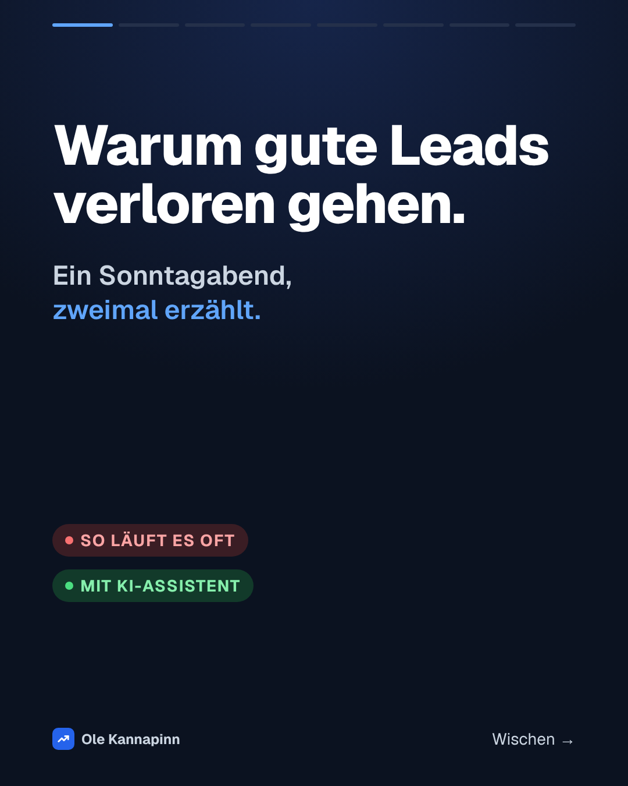
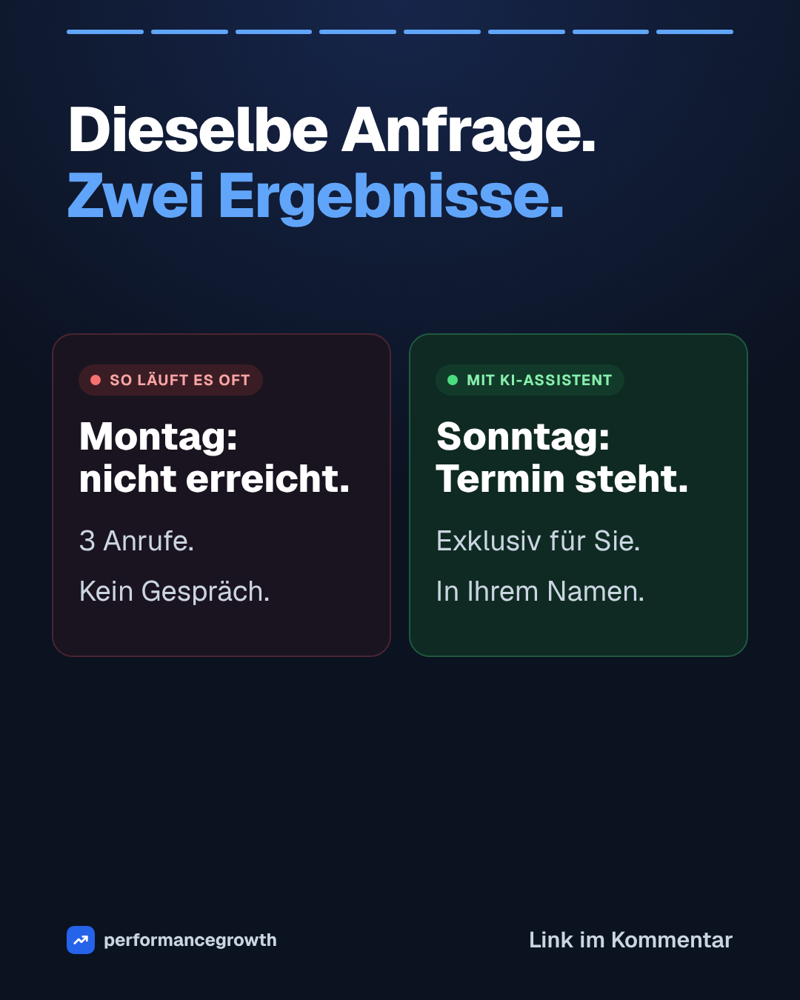
1 / 8
OK
Ole KannapinnErster Kommentar
Quelle zu Folie 4: Oldroyd, McElheran, Elkington, „The Short Life of Online Sales Leads“, Harvard Business Review, März 2011. Untersucht wurden Web-Anfragen bei über 2.000 US-Unternehmen. Verglichen wurden Unternehmen, die sich innerhalb einer Stunde meldeten, mit Unternehmen, die sich erst eine Stunde später meldeten. Wer die drei Schritte einmal live sehen will: performancegrowth.de/termin
3. Do 03.12. · 17:30 UhrVideo
OK
Ole KannapinnGründer performancegrowth · Neukunden für Versicherungsvermittler
Ihr Büro ist zu.
Die Anfrage kommt trotzdem.
Was passiert mit ihr bis Montag?
In vielen Büros erst einmal nichts. Verständlich, es ist Sonntagabend. Nur ist die Anfrage am Montagmorgen dann oft schon kalt.
Im Video erkläre ich, was in dieser Zeit stattdessen passieren kann. Daneben läuft ein nachgestellter Chat mit erfundenen Namen.
21:47 Uhr kommt eine Anfrage für eine Katzenversicherung rein.
Noch in derselben Minute schreibt der KI-Assistent per WhatsApp. Im Namen des Vermittlers, mit Texten, die er vorher freigegeben hat.
Zwei kurze Fragen. Zwei Terminvorschläge.
21:56 Uhr steht der Termin.
Der Vermittler hatte Feierabend und hat davon nichts mitbekommen.
Am Montag weiß er schon: Die Kundin will Vollschutz, beim Tierarzt waren es letztes Jahr 900 €.
Er telefoniert nicht hinterher. Er bereitet sich vor.
Die Katze ist nur das Beispiel. Bei Hausrat oder Wohngebäude läuft der Ablauf genauso.
Ehrliche Frage: Wann rufen Sie eine Anfrage von Sonntagabend heute zurück?
Montag früh, Montag irgendwann oder wenn es passt?
#Versicherungsvermittler #Versicherungsmakler #Neukundengewinnung
OK
Ole KannapinnErster Kommentar
Kurz zur Einordnung, weil mich hier nicht jeder kennt: Wir schalten für Versicherungsvermittler Anzeigen auf Facebook und Instagram, die unter ihrem Namen laufen, und jede Anfrage daraus geht nur an diesen einen Vermittler. Der KI-Assistent aus dem Video übernimmt den ersten Kontakt, danach berät der Vermittler selbst. Wie das mit Ihren eigenen Produkten und Ihrem Kalender aussähe, zeige ich Ihnen gern im Erstgespräch live in der Demo-Umgebung.
4. Di 08.12. · 7:45 UhrRechnung
OK
Ole KannapinnGründer performancegrowth · Neukunden für Versicherungsvermittler
Ihr Leadpreis ist nicht Ihr Preis.
Was kostet Sie ein Termin wirklich?
Beispiel: 25 € pro Lead, 200 € pro Termin.
Alle Werte sind angenommen, es sind keine Ergebnisse von uns oder von Kunden. Den Leadpreis habe ich bewusst günstig angesetzt. Setzen Sie Ihre eigenen Zahlen ein:
50 Leads zu je 25 € = 1.250 €
Je Lead 15 Minuten für Anrufe, Mailbox, Notiz, Nachfassen = 12,5 Stunden
12,5 Stunden zu je 60 € = 750 €
Zusammen 2.000 €. Daraus werden 10 Termine.
Macht 200 € pro Termin. 40 von 50 Anfragen haben Sie bezahlt, ohne dass ein Termin daraus wurde.
Jetzt zwei Stellschrauben, beide um 20 %:
Leadpreis 20 statt 25 €: 175 € pro Termin.
12 statt 10 Termine aus denselben 50 Anfragen: rund 167 € pro Termin.
Gleich großer Schritt, und die Quote bewegt mehr. Bei 15 statt 10 Terminen wären es rund 133 €.
Und die Quote entscheidet sich oft in den Stunden nach dem Formular.
Bei uns übernimmt den ersten Kontakt ein KI-Assistent per WhatsApp, in der Regel in unter einer Minute. Er fragt vor und bietet Termine aus Ihrem Kalender an.
In unserer nachgestellten Demo aus dem Video vom 3. Dezember stand der Termin 9 Minuten nach der Anfrage.
Was das bei Ihnen bringen kann, rechne ich gern mit Ihnen durch.
Welche Annahme ist bei Ihnen anders?
Mehr Zeit je Lead, ein anderer Stundensatz, mehr oder weniger Termine?
Schreiben Sie Ihre Werte gern drunter, ich rechne mit.
#Versicherungsvermittler #Versicherungsmakler
OK
Ole KannapinnErster Kommentar
Wenn Sie die Rechnung lieber nicht öffentlich mit Ihren echten Zahlen durchgehen wollen: Das machen wir im Erstgespräch gemeinsam. Dort sage ich Ihnen auch, was ein Termin bei uns kostet, mit Zahl. performancegrowth.de/termin
Tag 2 und 3: 8 neue Posts
Vom Agententeam überarbeitet: 2 Videos, 2 Karussells. Eingeplant, Stand der Texte 28.11.
5. So 29.11. · 8:00 UhrExklusivität fängt bei der Anzeige an
OK
Ole KannapinnGründer performancegrowth · Neukunden für Versicherungsvermittler
Ich glaube, ich habe noch mit keinem Vermittler gesprochen, der immer nur mit guten Leads gearbeitet hat.
Jeder hat schon mal ins Klo gegriffen.
Und wer schon mal Leads gekauft hat, der fragt sich natürlich auch, ob den gleichen Kontakt noch fünf andere bekommen haben. Die Sorge ist auch klar. Wenn man an dem Tag schon der Dritte ist, der da anruft, dann ist die Person am anderen Ende einfach bedient, bevor man überhaupt seinen Namen gesagt hat.
Und genau deshalb läuft bei uns die Werbung in Ihrem Namen, auf Facebook und Instagram. Das heißt, der Interessent meldet sich wirklich bei Ihnen. Und die Leads sind 100 % exklusiv, die gehen an keinen zweiten, keinen dritten.
Direkt nach der Eintragung geht dann innerhalb von Sekunden die erste WhatsApp raus. Da schreibt ein KI-Assistent in Ihrem Namen, stellt ein paar Fragen, schaut, ob tatsächlich Interesse an der Versicherung da ist, und wenn ja, bucht er direkt einen Termin in Ihrem Kalender.
Und das macht einfach einen riesen Unterschied. Im Termin sitzt Ihnen dann jemand gegenüber, der sich bei Ihnen gemeldet hat und den vorher noch keiner dreimal angerufen hat. Sie müssen nur noch beraten und verkaufen, das, was Sie am besten können.
Man muss auch dazusagen, Ihre Kunden bleiben Ihre Kunden. Auch wenn Sie irgendwann aufhören.
Wie oft hören Sie am Telefon „Da hat schon einer angerufen“?
#Versicherungsvermittler #Neukundengewinnung
OK
Ole KannapinnErster Kommentar
Kleiner Tipp für den Sonntag. Schauen Sie bei Ihrem aktuellen Leadanbieter mal in die Bedingungen, ob da etwas zu Weiterverkauf oder Mehrfachvergabe steht. Und wenn da nichts steht, fragen Sie einfach nach. Bei uns ist die Antwort ganz klar, jeder Lead geht nur an Sie, an keinen zweiten, keinen dritten. Wie das im Detail läuft, zeige ich Ihnen gern in einem kurzen Erstgespräch.
6. So 29.11. · 11:30 UhrDie vier Tage bis zum Termin
OK
Ole KannapinnGründer performancegrowth · Neukunden für Versicherungsvermittler
Termin steht, Donnerstag 16 Uhr. Und was passiert eigentlich in den Tagen bis dahin?
Oft erst mal gar nichts. Ist auch ganz normal, Sie haben ja genug anderes auf dem Tisch. Am Donnerstag sitzt man sich dann gegenüber, die erste Frage ist „Was haben Sie denn bisher so?“, und schon geht ein guter Teil vom Termin fürs Abfragen drauf.
Dabei ist mit dem Termin im Kalender im Prinzip schon viel gewonnen. Da ist quasi der Druck vom Kessel, die Person hat sich selbst einen Termin gebucht und damit ist eine gewisse Verbindlichkeit drin. Und genau die Tage bis zum Termin kann man einfach gut nutzen.
Bei uns macht das der KI-Assistent, der vorher schon per WhatsApp den ersten Kontakt gemacht und den Termin gebucht hat. Der holt sich dann per Chat noch die angebotsrelevanten Daten, also Sachen wie Miete oder Eigentum und wie groß die Wohnung ist, je nachdem, was für das Angebot noch fehlt.
Am Mittwoch steht bei Ihnen in der Software dann „Termin vorbereiten“ auf der Liste. Da ist alles drin, was die Person im Formular und im Chat gesagt hat, und was noch fehlt, ist markiert. Im Bild ist das Frau Albers, die gibt es nicht, das sind Demodaten. Bei ihr ist nur noch die Frage nach den Fahrrädern offen, und die klären Sie dann eben kurz im Termin.
Und das macht einfach einen riesen Unterschied, ob Sie perfekt vorbereitet reingehen und eigentlich alles da haben, um den Abschluss direkt im Termin zu machen, versus erst mal im Termin alles abfragen zu müssen.
Mich würde mal interessieren, wie viel von Ihrem Ersttermin heute fürs Abfragen draufgeht.
#Versicherungsmakler
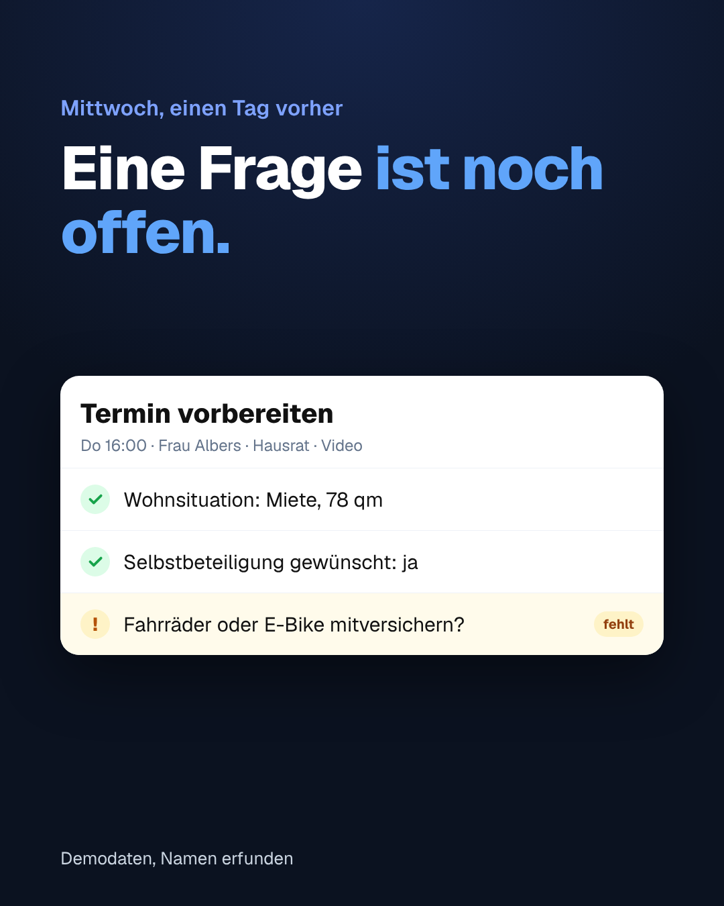
7. So 29.11. · 15:00 UhrPolicen vorab, vom Foto zum Vergleichs
OK
Ole KannapinnGründer performancegrowth · Neukunden für Versicherungsvermittler
Irgendwann im Termin sagt der Kunde „Moment, ich hol mal eben den Ordner“ und steht auf.
Und dann blättern Sie zehn Minuten mit, und ganz hinten taucht noch ein Vertrag auf, von dem er selbst gar nicht mehr wusste, dass er den hat. Ist ganz normal, das kennt eigentlich jeder Vermittler.
Genau deshalb haben wir das seit Kurzem umgedreht. Wenn der Termin gebucht ist, fragt der KI-Assistent Ihren Kunden per WhatsApp, ob er Fotos oder PDFs seiner aktuellen Policen schicken mag. Das ist freiwillig und läuft nur mit seiner Einwilligung. Und wenn erst mal nichts kommt, erinnert ihn der KI-Assistent noch mal freundlich daran.
Die Software liest die Verträge dann automatisch aus, und in Ihrer Terminvorbereitung haben Sie ein Vergleichsblatt. Da sehen Sie, was der Kunde heute im Monat zahlt, was in den nächsten drei Monaten kündbar ist, ob irgendwo etwas doppelt läuft und welcher Baustein noch fehlt.
Man muss dazusagen, nicht auf jedem Blatt steht etwas Auffälliges. Dann wissen Sie eben schon vorher, dass bei dem Kunden alles sauber aussieht, und das ist für den Termin auch was wert.
Aber das macht einfach einen riesen Unterschied, ob Sie vorbereitet in den Termin gehen oder erst mal zehn Minuten im Ordner suchen. Und so kann aus der einen Sparte, wegen der sich jemand eingetragen hat, im Prinzip ein Komplettcheck werden.
Was war eigentlich das Kurioseste, das Sie mal in einem Kundenordner gefunden haben? Bin gespannt.
#Versicherungsvermittler #Versicherungsmakler
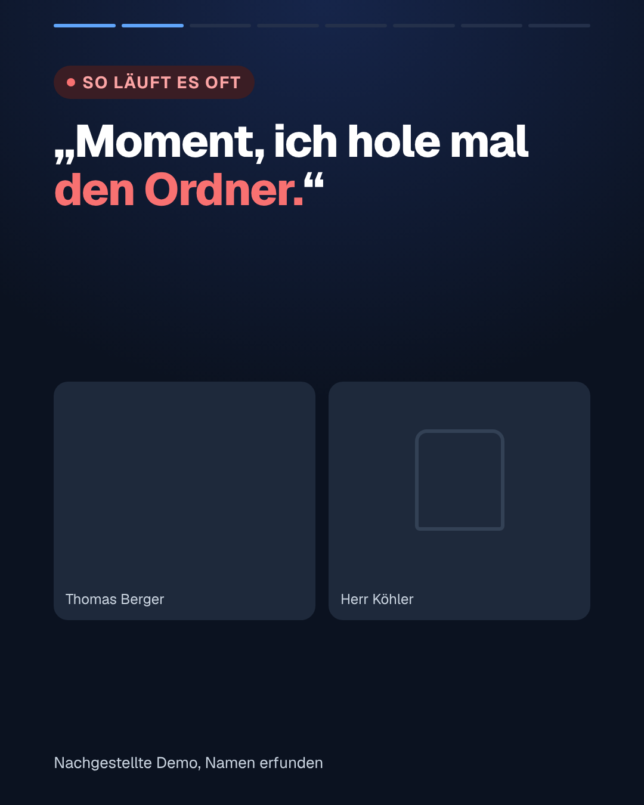
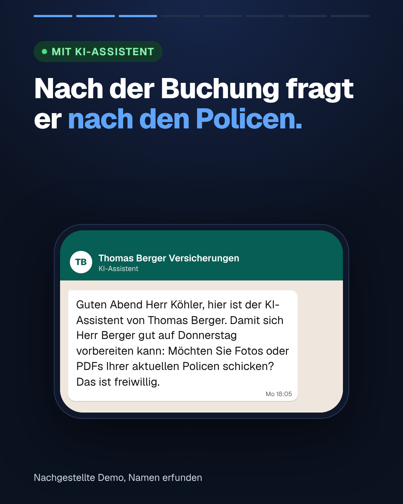
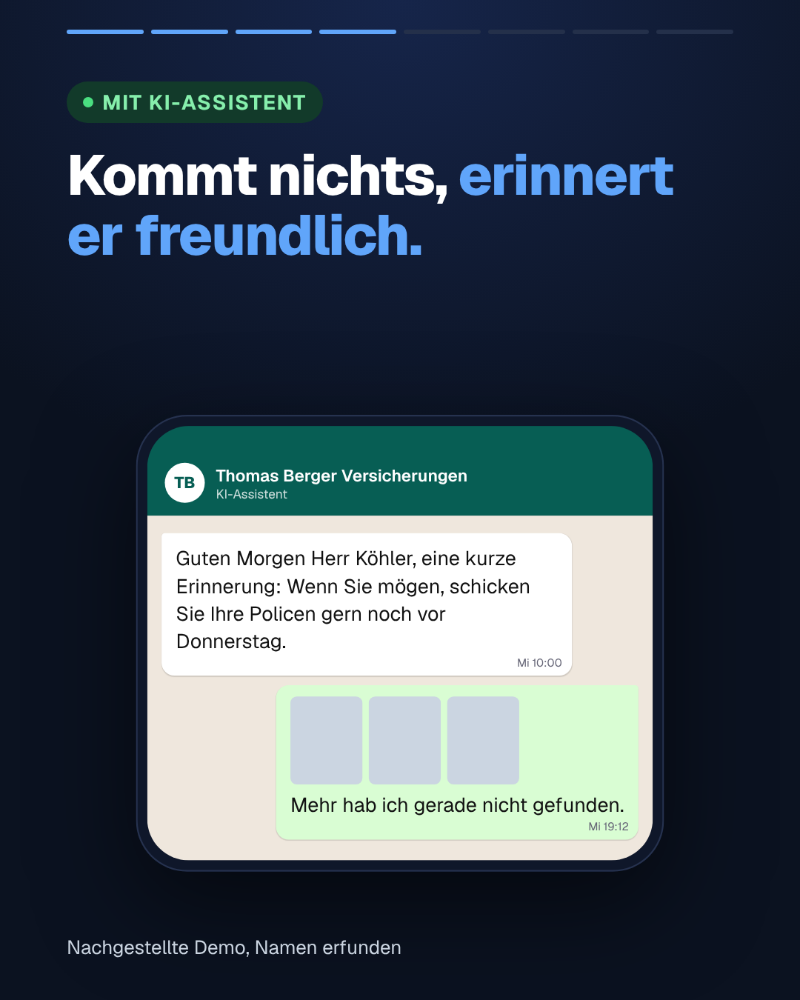
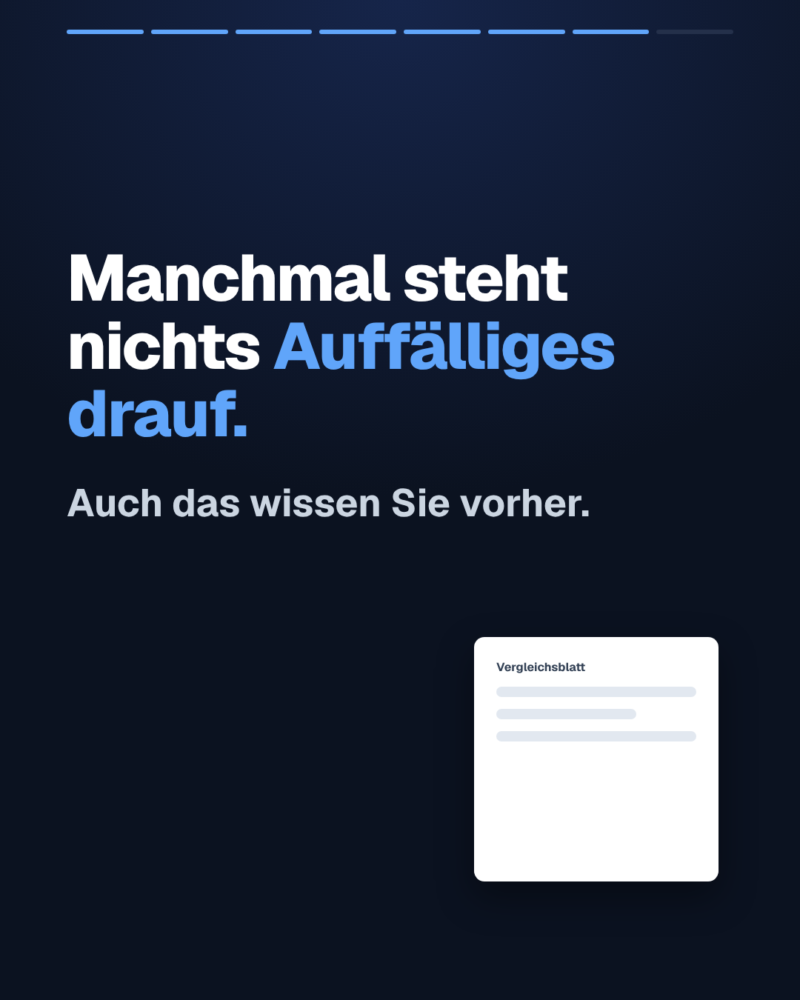
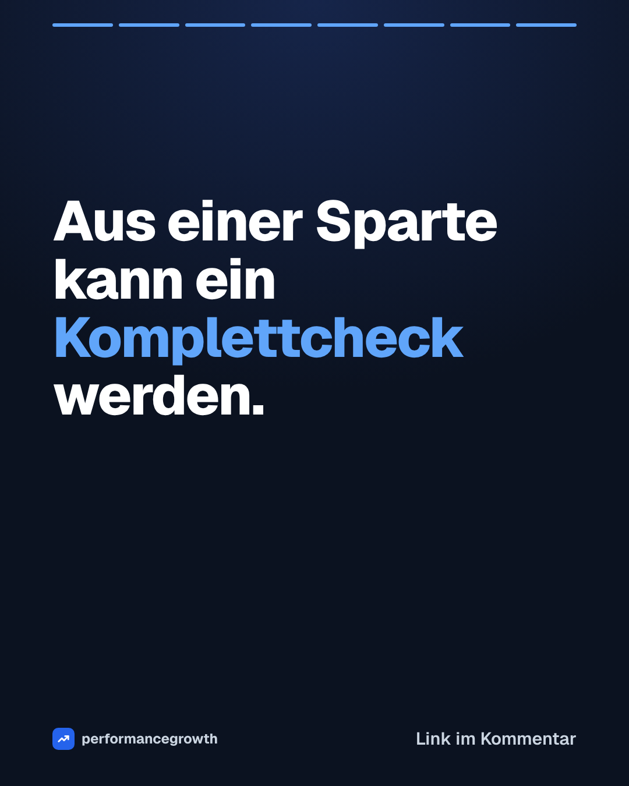
1 / 8
OK
Ole KannapinnErster Kommentar
Kurz für alle, die mich noch nicht kennen. Wir schalten für Vermittler Werbung auf Facebook und Instagram, und zwar im Namen des Vermittlers, und die Leads gehen an keinen zweiten und keinen dritten. Direkt nach der Eintragung geht innerhalb von Sekunden eine WhatsApp-Nachricht raus, der KI-Assistent stellt ein paar Fragen, qualifiziert vor und bucht den Termin direkt in Ihren Kalender. Das Vergleichsblatt gehört zur Software, in der Sie diese Termine dann vorbereiten. Im Erstgespräch zeig ich Ihnen das Blatt in der Demo mit Demodaten, und dann rechnen wir gern zusammen durch, ob sich das für Sie lohnt. Dauert 15 Minuten. performancegrowth.de/termin
8. So 29.11. · 18:30 UhrUmfrage „Wo geht Ihre Zeit drauf?“
OK
Ole KannapinnGründer performancegrowth · Neukunden für Versicherungsvermittler
Mal eine Frage an alle Vermittler: Wo geht bei Ihnen eigentlich die meiste Zeit drauf, bevor überhaupt ein Termin im Kalender steht?
A) Anrufen, also hinterhertelefonieren, bis endlich mal einer rangeht
B) Termine abstimmen, bis einer passt
C) Nachfassen, wenn sich keiner mehr meldet
D) Policen und Unterlagen zusammenkriegen
E) Was ganz anderes, dann gerne drunterschreiben
Einfach den Buchstaben in die Kommentare. Und wer mag, schreibt gleich dazu, wie viel Zeit ihn das pro Woche so ungefähr kostet.
Ich frage, weil ich gerade mit vielen Vermittlern spreche, und was ich immer wieder höre, ist, dass vor dem eigentlichen Beratungsgespräch einfach unheimlich viel Zeit draufgeht. Bei uns schreibt deshalb ein KI-Assistent den Lead per WhatsApp an, stellt ein paar Fragen, bucht den Termin direkt in Ihren Kalender, fasst nach und holt im Chat schon die angebotsrelevanten Daten ab. Im Prinzip telefonieren Sie dann nur noch da nach, wo keine Antwort kam. Und mich interessiert, wo das bei Ihnen den größten Unterschied machen würde.
Ich hab da so meine Vermutung. Die schreibe ich aber erst, wenn ein paar Antworten da sind, sonst beeinflusse ich Sie ja.
9. Mo 30.11. · 8:00 UhrStartseite „Heute“, ein Morgen in der
OK
Ole KannapinnGründer performancegrowth · Neukunden für Versicherungsvermittler
Montag, kurz vor acht. Wo sehen Sie eigentlich, was heute alles ansteht?
Wenn ich das im Erstgespräch frage, kommt meistens eine kleine Aufzählung. Kalender, Postfach, ein paar Sachen in WhatsApp, der gelbe Zettel am Bildschirm, und der Rest ist im Kopf. Im Prinzip fünf Stellen, bevor der Tag richtig anfängt. Und abends sitzt man dann noch da und trägt nach, was in den Gesprächen eigentlich war. Ist ganz normal, so arbeiten die meisten.
Bei uns läuft es ja so, dass sich jemand einträgt und dann direkt eine WhatsApp-Nachricht rausgeht, unser KI-Assistent stellt ein paar Fragen, qualifiziert vor und bucht, wenn tatsächlich Interesse da ist, einen Termin in Ihren Kalender. Und Ihre Termine stehen morgens auf einer Seite in unserer Software, die heißt einfach „Heute“.
Zu jedem Termin steht da auch, was die Person dem KI-Assistenten im Chat schon erzählt hat. Sie gehen also vorbereitet ins Gespräch und wissen vorher, worum es geht. Nach dem Gespräch klicken Sie das Ergebnis an, und abends steht schon drin, was heute war.
Man muss dazusagen, die Beratungsdoku machen Sie wie bisher, die gehört zu Ihrer Beratung dazu. Aber für den gelben Zettel bleibt dann wenig.
Und das macht einfach einen riesen Unterschied. Sie müssen im Prinzip nur noch Ihre Termine wahrnehmen und dort mal hinterhertelefonieren, wo jemand im Chat nicht geantwortet hat. Beraten, verkaufen, das, was Sie am besten können.
Wie viele Stellen sind es bei Ihnen morgens? Schreiben Sie mir die Zahl gern drunter.
#Versicherungsvermittler
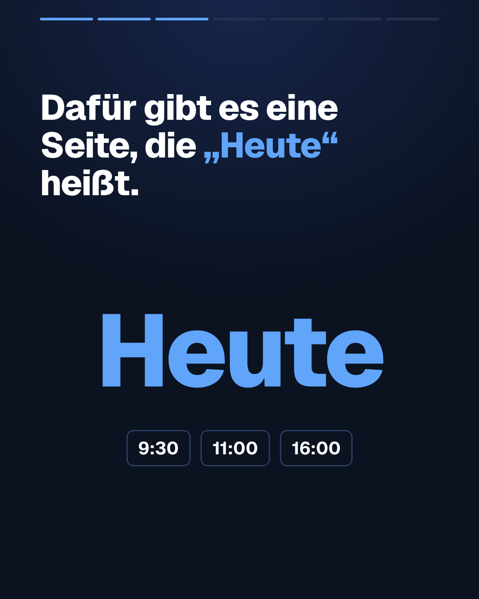
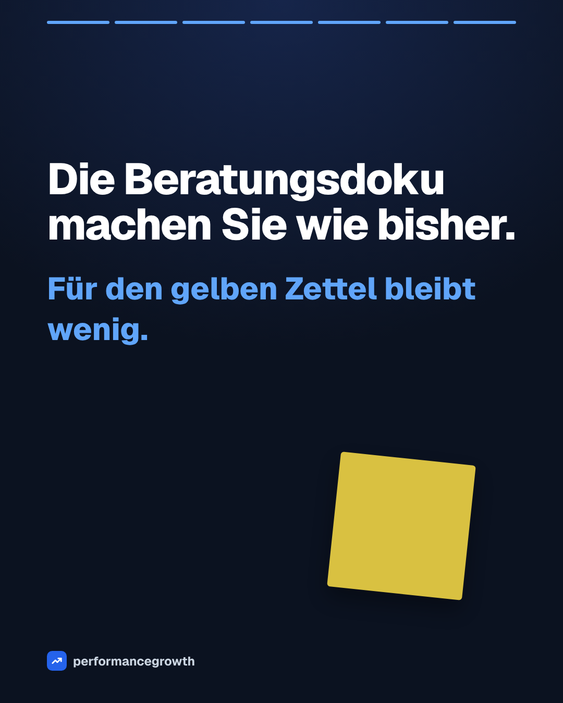
1 / 7
OK
Ole KannapinnErster Kommentar
Ein bisschen Hintergrund, falls Sie neu hier sind. Die Software bekommen Sie bei uns zusammen mit Werbung auf Facebook und Instagram, die in Ihrem eigenen Namen läuft. Die Leads sind 100 % exklusiv, die gehen an keinen zweiten und keinen dritten. Der KI-Assistent schreibt die Interessenten dann per WhatsApp an und bucht, wenn tatsächlich Interesse da ist, den Termin direkt in Ihren Kalender. Die Beratung machen Sie selbst, „Heute“ zeigt Ihnen vorher, was im Chat schon besprochen wurde. Wenn Sie sehen wollen, wie so ein Morgen bei Ihnen aussehen würde, schreiben Sie mir einfach.
11. Mo 30.11. · 15:00 UhrDatenschutz, vier Fragen für Ihren Dat
OK
Ole KannapinnGründer performancegrowth · Neukunden für Versicherungsvermittler
Ja, was ich in Gesprächen mit Vermittlern immer wieder höre, sobald es um Policen per WhatsApp geht: "Und was ist mit dem Datenschutz?"
Die Frage kommt meistens noch im selben Satz. Und das finde ich auch richtig so, da muss man als Vermittler einfach genau hinschauen.
Also kurz zum Hintergrund. Bei uns geht nach jeder Anfrage eine WhatsApp-Nachricht raus, dann schreibt ein KI-Assistent mit der Person, stellt ein paar Fragen, bucht den Termin in Ihrem Kalender und holt sich im Chat auch die angebotsrelevanten Daten, wenn es passt auch die bestehenden Policen. So dass Sie perfekt vorbereitet in den Termin starten können.
Wie das bei uns eingestellt ist, sage ich Ihnen einfach mal ganz konkret.
Ob die Person Unterlagen schickt, entscheidet sie selbst. Der KI-Assistent fragt vorher nach ihrer Einwilligung.
Die Unterlagen liegen in unserer Software auf Servern in der EU.
Sehen kann sie in der Software nur der Vermittler, in seinem eigenen Konto. Da kommt kein anderer Vermittler ran, ist ja auch klar, die Leads sind bei uns exklusiv.
Und nach einer gewissen Zeit löscht die Software die Unterlagen automatisch wieder.
Das sind im Prinzip genau die vier Fragen aus dem Bild. Die würde ich an Ihrer Stelle jedem Anbieter stellen, uns natürlich auch. Mit den Antworten gehen Sie dann gut vorbereitet in das Gespräch mit Ihrem Datenschutzbeauftragten.
Wenn Sie mögen, zeige ich Ihnen vorher gern, wie das alles eingestellt ist.
Was wäre bei Ihnen die erste Frage, wenn Kunden Ihnen Policen per WhatsApp schicken?
#Datenschutz #Versicherungsvermittler
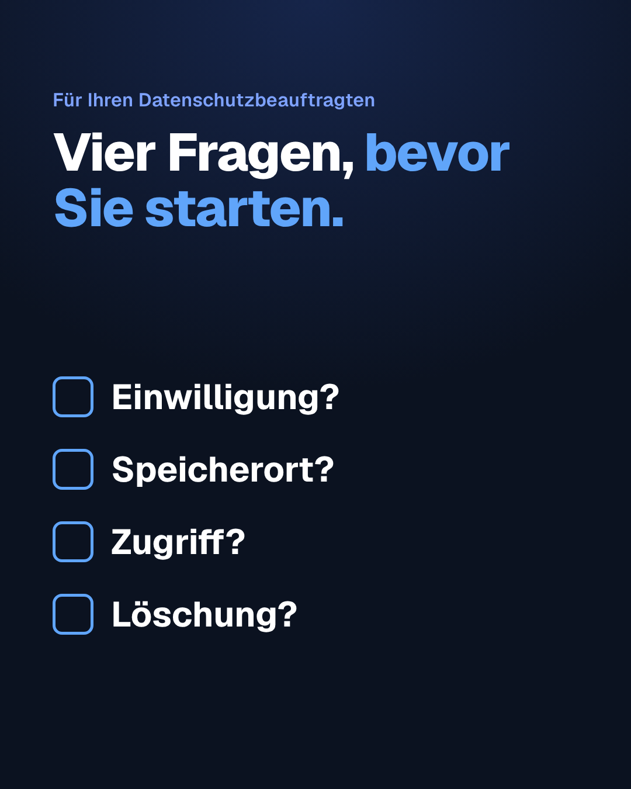
OK
Ole KannapinnErster Kommentar
Wer die Einstellungen einmal sehen will, bevor er mit seinem Datenschutzbeauftragten spricht, schreibt mir einfach eine Nachricht. Den Auftragsverarbeitungsvertrag schicke ich Ihnen dann gern vorab zum Lesen, und in unserer Datenschutzerklärung steht genau drin, welcher Dienst wofür zuständig ist. Dann haben Sie alles schon mal in der Hand.
12. Mo 30.11. · 18:30 UhrErst eine Sparte
OK
Ole KannapinnGründer performancegrowth · Neukunden für Versicherungsvermittler
Wenn mich ein Vermittler fragt, mit wie vielen Sparten er bei uns starten soll, sage ich fast immer, erst mal mit einer. Auch wenn er am liebsten gleich alles auf einmal machen würde.
Der Grund ist eigentlich ganz einfach. Entscheidend ist im Prinzip das Verhältnis aus einem günstigen Leadpreis, der guten Abschlussquote und noch hohen Provisionen für Sie als Vermittler. Wenn das in einer Sparte nicht zusammenpasst, wird es mit drei Sparten auch nicht besser.
Ich hatte gerade wieder einen Vermittler, der vorher über eine Agentur Leads bekommen hat und mit den Leads einfach allein gelassen wurde. Also A, der Leadpreis war hoch, B, die Abschlussquote war gering, und C, das Produkt war nicht ideal ausgewählt, weil die Provision für ihn auch nicht besonders hoch war. Damit waren einfach alle drei Voraussetzungen schon mal nicht gegeben, dass das von Erfolg gekrönt sein kann. Da hätte eine zweite oder dritte Sparte auch nichts dran geändert.
Und genau das sieht man nur sauber, wenn erst mal eine Sparte allein läuft. Dann schauen wir zusammen drauf, was ein Lead kostet, wie viele Termine daraus werden und was am Ende an Abschlüssen rauskommt. Dafür gibt es bei uns in der Software die Ansicht Zahlen. Wenn die Zahlen stehen, kommt die zweite Sparte dazu.
Wie viel in einer einzigen Sparte drin sein kann, habe ich 2019 gesehen. Da kam eine Versicherungsagentur auf mich zu, die Leads fürs Thema Katzen- und Tierkrankenversicherung haben wollte. Wir haben Werbung auf Facebook und Instagram geschaltet, zu sehr günstigen Leadpreisen, und das Team dort war verdammt stark im Vertrieb. Ich habe sie dann quasi mit Leads geflutet. Am Ende waren es sage und schreibe 700 zusätzliche Verträge in einem Monat. Man muss dazusagen, das war ein besonderes Team mit sehr viel Saleserfahrung. Aber da hat einfach alles gepasst, und zwar in einer einzigen Sparte.
Ja, Katze klingt erst mal klein, ich weiß. Aber wenn die Zahlen in einer Sparte stimmen, macht das einfach einen riesen Unterschied.
Mit welcher Sparte haben Sie damals angefangen, oder würden Sie heute anfangen? Schreiben Sie es gern in die Kommentare. Welche bei Ihnen zum Start am besten passt, rechne ich gern mit Ihnen durch.
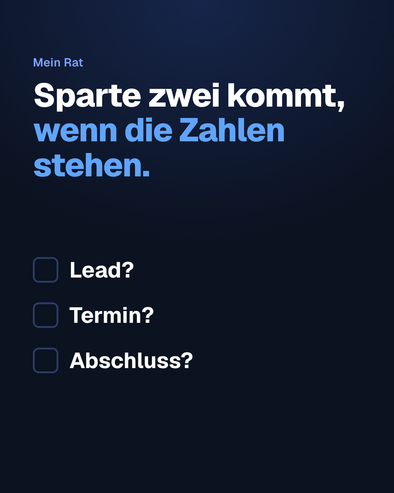
Besser: Handyfoto deiner handschriftlichen Notiz „1 Sparte / Lead? Termin? Abschluss? / dann Sparte 2“. Bis dahin dieses Bild.
OK
Ole KannapinnErster Kommentar
Im Erstgespräch schauen wir zusammen, mit welcher Sparte Sie am besten starten, und rechnen das direkt mit Ihren eigenen Provisionen durch. Das dauert 15 Minuten. performancegrowth.de/termin
Di und Mi: 6 Posts
Von dir bestätigt, Medien gebaut, eingeplant.
13. Di 01.12. · 8:00 UhrKarussell, 10 Folien
OK
Ole KannapinnGründer performancegrowth · Neukunden für Versicherungsvermittler
Acht Fragen, bevor Sie einem Leadanbieter Geld geben.
Stellen Sie die ruhig auch mir.
Ich hatte gerade wieder einen Vermittler, der mit uns gestartet ist. Der hatte vorher mit einer anderen Agentur Leads gemacht. Die hat Werbung geschaltet, die Anfragen kamen rein, und dann wurde er einfach allein gelassen mit den Leads. Keine Vorqualifizierung per WhatsApp, er hat die Leute probiert anzurufen, und die Lead-Qualität war einfach schlecht.
Wenn man sich das hinterher anschaut, konnte das eigentlich nicht von Erfolg gekrönt sein. Also A, der Leadpreis war hoch. B, die Abschlussquote war gering. C, das Produkt war nicht ideal ausgewählt, weil die Provision für ihn auch nicht besonders hoch war. Damit waren alle drei Voraussetzungen schon mal nicht gegeben.
Dann haben wir gestartet, und er war tatsächlich begeistert. Mit allen drei ersten Leads konnte er sprechen, er hat ein Angebot rausgeschickt und hatte Termine. Das ist jetzt nicht die Regel, dass es bei allen Leads so läuft, aber das war wirklich ein perfekter Start. Den ersten Abschluss erwarten wir schon nach wenigen Tagen.
Und genau deshalb habe ich mal aufgeschrieben, was ich als Vermittler jeden Leadanbieter fragen würde, bevor ich unterschreibe. Die acht Fragen stehen im Karussell.
Im Erstgespräch fragen mich die meisten zuerst nach dem Leadpreis. Ist auch klar, das ist die Zahl, die man gut vergleichen kann. Ob sich das am Ende rechnet, hängt aber an ganz anderen Stellen. Zum Beispiel daran, wer sich bei der Person meldet, während Sie gerade selbst im Beratungstermin sitzen.
Kurz für alle, die mich nicht kennen. Wir schalten für Vermittler Werbung auf Facebook und Instagram, im Namen des Vermittlers. Jeder Lead geht nur an diesen einen Vermittler. Und ein KI-Assistent schreibt der Person per WhatsApp, in der Regel in unter einer Minute, stellt ein paar Fragen und bucht bei Interesse direkt einen Termin in den Kalender des Vermittlers.
Meine eigenen Antworten auf alle acht stehen gleich in den Kommentaren. Stellen Sie die Fragen aber gern auch jedem anderen Anbieter.
Welche Frage hätten Sie Ihrem letzten Leadanbieter gern vorher gestellt?
#Versicherungsvermittler #Versicherungsmakler
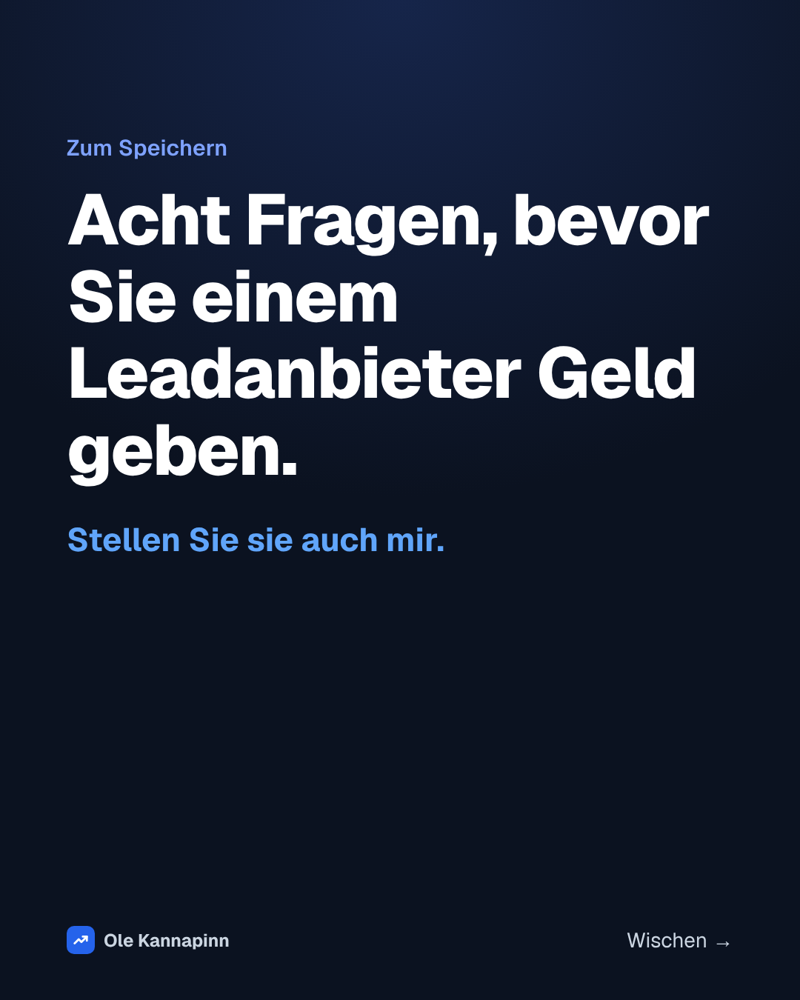
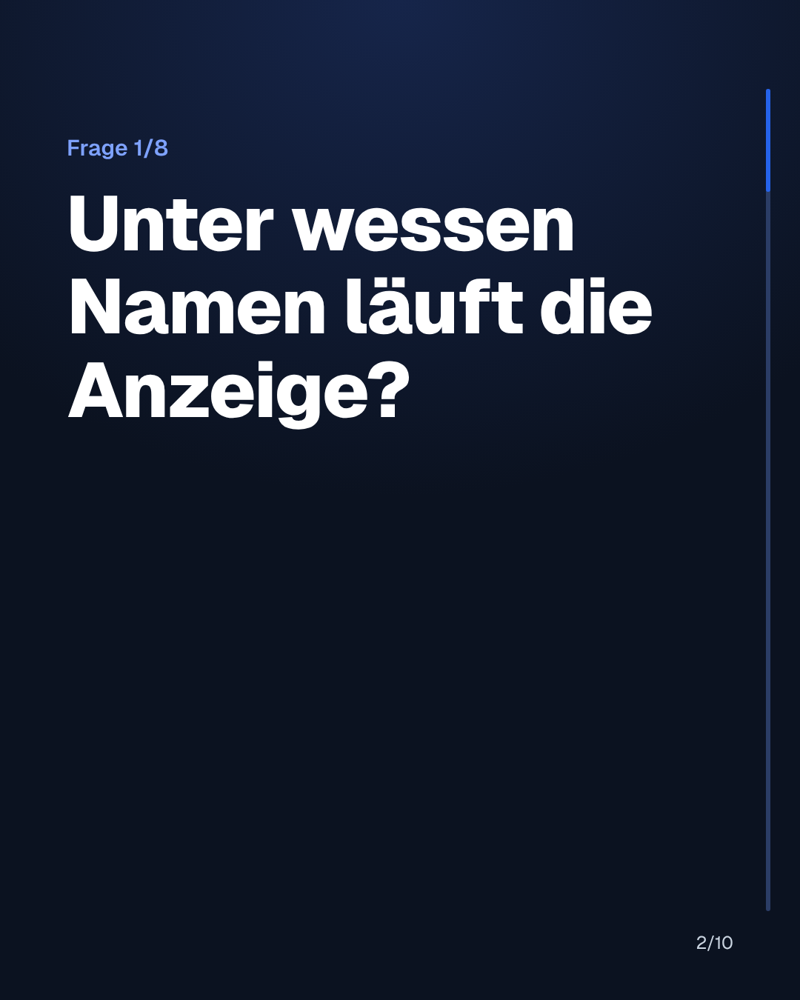
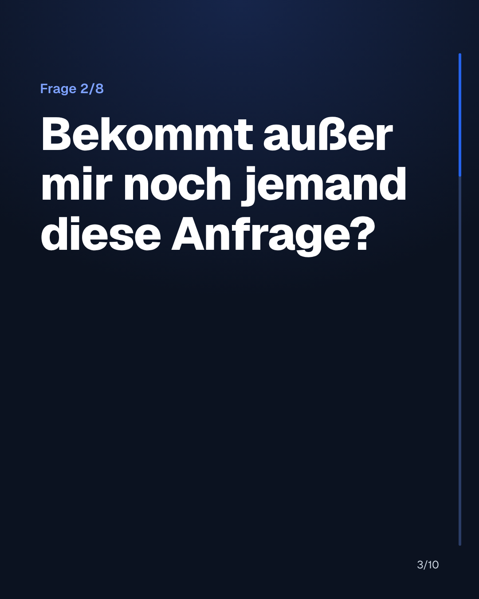
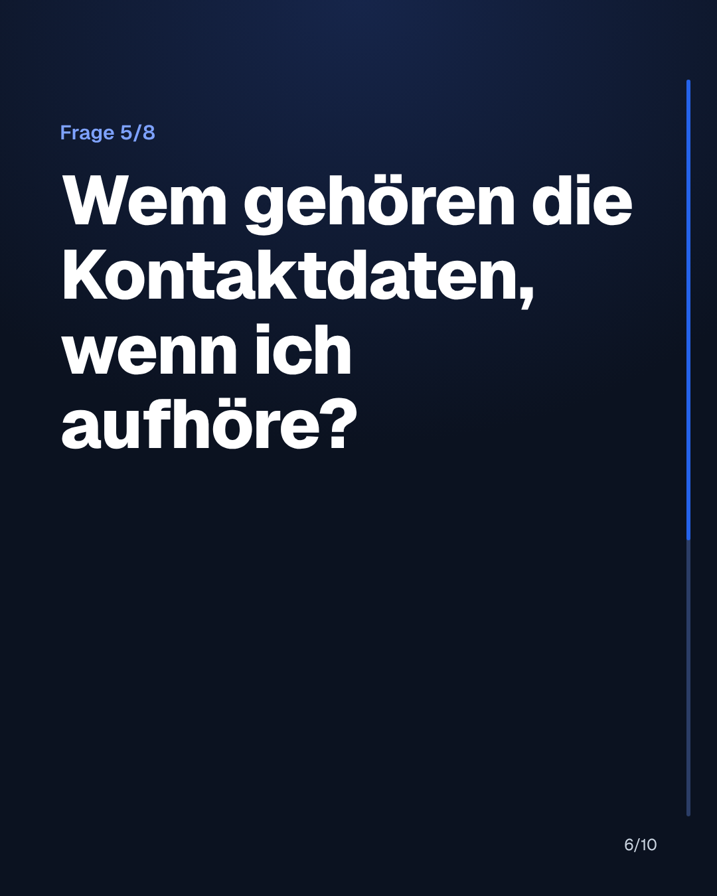
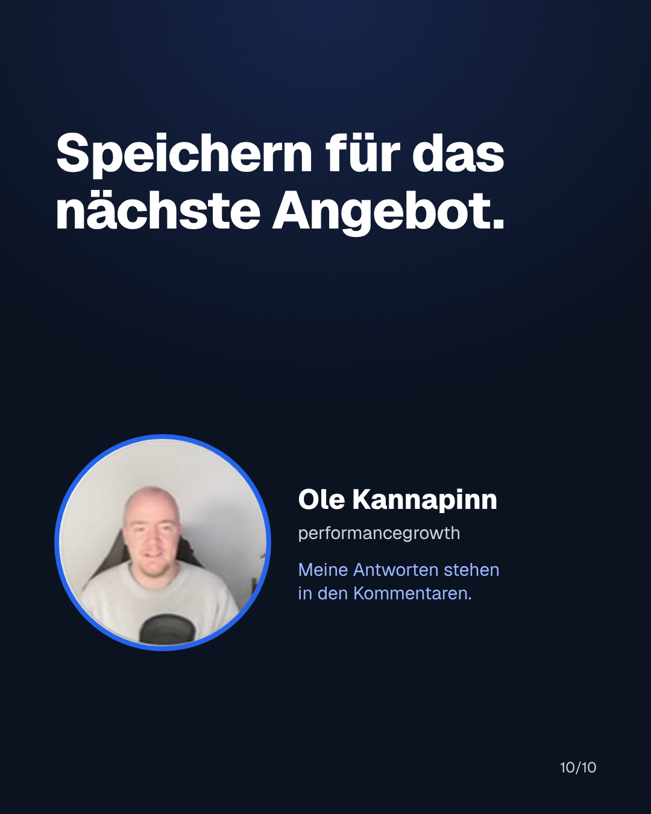
1 / 10
OK
Ole KannapinnErster Kommentar
Wie versprochen, meine Antworten.
1. Im Namen des Vermittlers, also unter Ihrem Namen, auf Facebook und Instagram.
2. Niemand. Jeder Lead geht zu 100 Prozent an Sie, an keinen zweiten und keinen dritten, und wird nicht weiterverkauft.
3. Ein KI-Assistent per WhatsApp, in der Regel in unter einer Minute. Er sagt im Chat, dass er eine KI ist, stellt ein paar Fragen, schaut, ob tatsächliches Interesse da ist, und bucht dann direkt einen Termin in Ihrem Kalender. Sobald Sie selbst schreiben, hält er sich raus.
4. Der KI-Assistent fasst per WhatsApp nach, bis die Person antwortet oder bucht, dann hört er auf. Hat jemand kein WhatsApp, bekommen Sie eine Push-Nachricht. Wer "Melden Sie sich in zwei Wochen" schreibt, kommt auf Wiedervorlage. Sie telefonieren im Prinzip nur noch dort hinterher, wo im Chat keine Antwort kam.
Genau diese Vorqualifizierung hat dem Vermittler aus dem Post vorher gefehlt. Wenn ein Lead am Wochenende reinkommt und erst am Montag angerufen wird, steht die Person vielleicht gerade im Supermarkt an der Kasse und geht bei einer unbekannten Nummer einfach nicht ran. Ist ganz normal. Wenn erst mal der Termin im Kalender steht, ist quasi der Druck vom Kessel.
OK
Ole KannapinnZweiter Kommentar
5. Ihnen. Ihre Kunden bleiben Ihre Kunden, auch wenn Sie aufhören.
6. Die Kosten je Lead kommen direkt aus dem Werbekonto. Termine und Abschlüsse tragen Sie mit einem Klick ein, dann sehen Sie in der Software auch, was ein Termin und was ein Abschluss gekostet hat.
7. Sach, Kranken, Leben haben wir schon viel gemacht, und wir wissen über die Jahre ziemlich genau, welche Produkte gut laufen und welche weniger gut. Entscheidend ist das Verhältnis aus einem günstigen Leadpreis, einer guten Abschlussquote und einer hohen Provision. Beim Vermittler aus dem Post hat genau das vorher nicht gepasst. Für Ihre Sparte rechne ich Ihnen das im Erstgespräch gern durch.
8. Ohne Laufzeit, 3 Monate oder 12 Monate, das wählen Sie. Die Kündigungsfrist steht im Angebot, fragen Sie ruhig vorher danach.
Und wenn Sie mit Leads schon mal ins Klo gegriffen haben, schließen Sie bitte nicht von damals auf die Zukunft. Ein perfekt vorbereiteter Termin im Kalender versus ein Kontakt, der nach zwei Tagen schon abgekühlt ist, das macht einfach einen fundamentalen Unterschied.
Wenn Sie zu einer Antwort mehr wissen wollen, fragen Sie gern nach.
14. Di 01.12. · 12:00 UhrNur Text
OK
Ole KannapinnGründer performancegrowth · Neukunden für Versicherungsvermittler
Empfehlungen sind im Prinzip das Beste, was Ihnen als Vermittler passieren kann.
Das Problem ist nur, Sie können nicht planen, wann die nächste kommt.
Also erst mal, damit das hier keiner falsch versteht. Wenn jemand Sie weiterempfiehlt, kommt der Kunde schon mit Vertrauen, das ein anderer für Sie aufgebaut hat. Da kommt keine Anzeige ran, und das sage ich auch jedem so.
Man muss aber dazusagen, wann jemand Ihren Namen weitergibt, liegt einfach nicht bei Ihnen. Da können Sie noch so gut arbeiten. Und dann gibt es eben Monate, da kommt viel, und Monate, da kommt halt einfach wenig. Das ist ganz normal und hat mit Ihrer Arbeit gar nichts zu tun.
Die erfolgreichsten Vermittler arbeiten fast alle mit Leads. Die müssen nicht mehr nur auf Empfehlungen warten und haben einfach konstant jede Woche neue Gespräche mit Menschen, die sich wirklich für eine Versicherung interessieren. Das macht einen riesen Unterschied, gerade wenn man Bestand aufbauen will.
Und genau deshalb schalten wir für Vermittler Werbung auf Facebook und Instagram, und zwar im Namen des Vermittlers. Die Leads bekommt kein zweiter und kein dritter. Wer anfragt, bekommt innerhalb von Sekunden eine WhatsApp-Nachricht, dann stellt unser KI-Assistent ein paar Fragen, qualifiziert vor und bucht, wenn es passt, direkt einen Termin in Ihren Kalender. Sie müssen dann im Prinzip nur noch beraten und verkaufen, das, was Sie am besten können.
Eine Empfehlung ersetzt das natürlich nicht, ist auch klar. Aber wenn mal so ein ruhiger Monat kommt, haben Sie selbst was in der Hand.
Wo kam eigentlich Ihr letzter Neukunde her? Ganz ehrlich, einfach der letzte.
OK
Ole KannapinnErster Kommentar
Kurz zu mir, für alle, die mich noch nicht kennen. Marco Thom und ich sind seit 2014 im Online-Marketing und seit 2019, 2020 im Versicherungsbereich unterwegs. Ich habe irgendwann mal zusammengezählt, über 200.000 Leads müssten das seitdem gewesen sein. Wenn Sie sich anschauen möchten, wie Werbung in Ihrem eigenen Namen bei uns läuft, buchen Sie sich einfach einen Termin, 15 Minuten reichen dafür. performancegrowth.de/termin
15. Di 01.12. · 17:30 UhrVideo mit Gesicht
OK
Ole KannapinnGründer performancegrowth · Neukunden für Versicherungsvermittler
Ich komme eigentlich aus dem Abnehm-Coaching.
Und 2019 kam dann eine Anfrage, über die ich bei Versicherungen gelandet bin.
Seit 2014 bin ich im Online-Marketing, und damals habe ich eines der größten Abnehm-Coachings in Deutschland aufgebaut.
Und dann kam 2019 diese Anfrage. Eine Agentur wollte Leads für Katzenversicherungen. Also habe ich den Auftrag angenommen, und wir haben für die Agentur Werbung auf Facebook und Instagram geschaltet.
Man muss dazusagen, die Agentur war verdammt stark im Vertrieb. Der Agenturleiter hatte sehr viel Saleserfahrung, die Mitarbeiter genauso. Ich habe sie dann mit Leads geflutet, und das zu sehr günstigen Preisen. Und das Team hat einfach einen Lead nach dem anderen abgeschlossen.
Am Ende hat die Agentur sage und schreibe 700 Verträge in einem Monat zusätzlich geschrieben. Das war ein echter Erfolg. Das war natürlich ein besonderer Monat. Aber da habe ich gemerkt, worauf es im Lead-Geschäft im Prinzip ankommt. Also eine hervorragende Lead-Generierung und ein hervorragender Vertrieb dahinter. Wenn beides zusammenkommt, macht das einfach einen riesen Unterschied.
Und genau deshalb übernehmen wir heute für Vermittler die Lead-Generierung. Die Werbung läuft in Ihrem Namen, das heißt, der Interessent meldet sich wirklich bei Ihnen und nicht bei irgendeinem zufälligen Portal. Die Leads sind 100 % exklusiv, die gehen an keinen zweiten und keinen dritten.
Direkt nach der Eintragung geht innerhalb von Sekunden eine WhatsApp-Nachricht raus. Dann schreibt ein KI-Assistent, stellt ein paar Fragen, qualifiziert vor und bucht, wenn die Person tatsächlich Interesse hat, direkt einen Termin in Ihrem Kalender. Sie müssen dann im Prinzip nur noch beraten und verkaufen, das, was Sie am besten können.
Wie ist das bei Ihnen, was war bisher eher der Engpass, die Leads selbst oder die Zeit, sie schnell genug anzurufen?
#Versicherungsvermittler #Neukundengewinnung
OK
Ole KannapinnErster Kommentar
Falls Sie mal sehen möchten, wie das bei Ihnen konkret abläuft, von der Anzeige bis zum Termin im Kalender, zeige ich Ihnen das gern in 15 Minuten. Entscheidend ist am Ende das Verhältnis aus einem günstigen Lead-Preis, einer guten Abschlussquote und einer ordentlichen Provision, und das rechne ich gern mit Ihnen für Ihre Sparte durch. performancegrowth.de/termin
16. Mi 02.12. · 8:00 UhrNur Text
OK
Ole KannapinnGründer performancegrowth · Neukunden für Versicherungsvermittler
„Wer mir Leads verkaufen will, soll mir erst mal sagen, ...“
Wie würden Sie diesen Satz zu Ende schreiben?
Ich frage das ganz bewusst als jemand, der selbst Leads verkauft.
Was ich in Gesprächen mit Vermittlern immer wieder höre, ist, dass im Prinzip jeder schon mal Leads gekauft hat, wo die Qualität am Ende einfach nicht gepasst hat. Ich habe tatsächlich noch mit niemandem gesprochen, der gesagt hat, ich habe immer nur mit guten Leads gearbeitet. Jeder hat da schon mal quasi ins Klo gegriffen. Ist ganz normal.
Man muss aber dazusagen, ob Sie einen Kontakt anrufen, der nach zwei Tagen schon abgekühlt ist, oder ob die Person sich bereits einen Termin in Ihrem Kalender gebucht hat und gut vorbereitet ist, das macht einfach einen riesen Unterschied. Deshalb würde ich von schlechten Erfahrungen aus der Vergangenheit nicht auf die Zukunft schließen.
Gestern habe ich acht Fragen aufgeschrieben, die man jedem Leadanbieter stellen sollte. Hinterher ist mir aufgefallen, dass das eben meine acht sind. Mich interessiert einfach, welche Frage Ihnen als Erstes einfällt, wenn Sie an Ihren letzten Leadkauf denken.
Ein halber Satz reicht. Unfreundliche Antworten nehme ich auch, und ich schreibe unter jede Antwort etwas zurück.
Mein eigenes Satzende wäre übrigens „... wer sich bei der Person meldet, und wie schnell.“
#Versicherungsvermittler #Versicherungsmakler
OK
Ole KannapinnErster Kommentar
Kurz für alle, die mich nicht kennen. Ich bin Ole von performancegrowth aus Berlin. Wir schalten für Vermittler Anzeigen auf Facebook und Instagram unter ihrem eigenen Namen, und jede Anfrage geht nur an diesen einen Vermittler. Dann schreibt ein KI-Assistent der Person per WhatsApp, in der Regel in unter einer Minute, und sagt dazu, dass er eine KI ist. Er stellt ein paar Fragen, qualifiziert vor und bucht, wenn es passt, direkt einen Termin in den Kalender des Vermittlers. Der muss im Prinzip nur noch das machen, was er am besten kann, beraten und verkaufen. Die acht Fragen von gestern stehen als Karussell in meinem Profil, meine Antworten darunter.
17. Mi 02.12. · 12:00 UhrChat-Video
OK
Ole KannapinnGründer performancegrowth · Neukunden für Versicherungsvermittler
Es gibt eine Frage, die unser KI-Assistent im Chat ganz bewusst nicht beantwortet.
Und ausgerechnet die kommt im Chat am häufigsten.
„Welcher Tarif ist denn der beste? Reicht der günstigste?“
Im Video sehen Sie einen nachgestellten Chat, die Namen sind erfunden. Dienstag, 12:31 Uhr, kommt eine Anfrage für eine Wohngebäudeversicherung rein. Der Assistent stellt sich als KI vor, fragt nach dem Haus und nach dem Baujahr, und dann kommt genau diese Frage.
Er schreibt, dass Herr Beispiel das persönlich mit ihr bespricht, und schlägt zwei Termine vor. Sie hakt nach, er bleibt freundlich dabei.
Das haben wir so eingestellt, weil die Tarifempfehlung Beratung ist, und die Beratung macht bei uns der Vermittler. Ist auch klar, ob der günstigste Tarif reicht, hängt beim Wohngebäude eben an Dingen wie Wohnfläche, Elementarschutz oder dem, was beim letzten Sturm am Dach war. Das gehört ins Gespräch. Und im Beratungsprotokoll steht hinterher auch Ihr Name.
Die KI macht im Prinzip die ganze Vorarbeit. Sie schreibt den Interessenten an, stellt ein paar Fragen, qualifiziert vor, holt die angebotsrelevanten Daten und bucht dann direkt einen Termin in Ihren Kalender. Und wenn erst mal der Termin drin ist, ist quasi der Druck vom Kessel. Sie gehen vorbereitet ins Gespräch und machen das, was Sie am besten können, beraten und verkaufen. Das macht einfach einen riesen Unterschied.
Kurz zur Einordnung für alle, die neu hier sind. Wir schalten für Vermittler Werbung auf Facebook und Instagram, und zwar im Namen des Vermittlers. Jeder Lead geht nur an diesen einen Vermittler, an keinen zweiten und keinen dritten. Der KI-Assistent meldet sich per WhatsApp, in der Regel in unter einer Minute.
Mich interessiert jetzt Ihre Praxis. Was antworten Sie, wenn ein Kunde Sie fragt, ob der günstigste Tarif reicht?
#Versicherungsvermittler #Versicherungsmakler
OK
Ole KannapinnErster Kommentar
Kurz zum Video: Der Chat ist nachgestellt, Namen und Daten sind erfunden. Wenn Sie sehen wollen, an welcher Stelle der KI-Assistent bei Ihren Sparten an Sie übergibt, zeige ich Ihnen das gern in 15 Minuten in der Demo-Umgebung: performancegrowth.de/termin
18. Mi 02.12. · 17:30 UhrZitatbild
OK
Ole KannapinnGründer performancegrowth · Neukunden für Versicherungsvermittler
Ich wurde mal von Gründer.de zum Online-Marketer des Jahres gewählt.
Einen Versicherungsvertreter hat das 2019 einfach kein bisschen beeindruckt.
Ich saß bei ihm und habe ihm erzählt, wie viele Anfragen wir über Facebook und Instagram für ihn holen können. Er hat genickt, seinen Kalender aufgemacht und dann kam die Frage. „Und wann soll ich die alle anrufen?“
Über die Frage hatte ich bis dahin tatsächlich nie nachgedacht. Ich komme aus dem Online-Marketing, und damals war für mich im Prinzip alles erledigt, sobald das Formular ausgefüllt war.
Heute weiß ich, die Frage ist absolut berechtigt. Da trägt sich jemand am Wochenende ein, angerufen wird erst am Montag, und die Person steht gerade im Supermarkt an der Kasse. Unbekannte Nummer, sie geht einfach nicht ran. Das ist ganz normal und hat mit dem Vermittler gar nichts zu tun. Aber dann ist der Lead eben schon abgekühlt.
Und genau deshalb haben wir unser Tool so gebaut, dass direkt nach der Eintragung eine WhatsApp-Nachricht rausgeht, in der Regel innerhalb von Sekunden. Dann schreibt ein KI-Assistent, der sich auch als KI zu erkennen gibt, stellt ein paar Fragen, qualifiziert vor und bucht, wenn tatsächlich Interesse da ist, direkt einen Termin im Kalender des Vermittlers. Die Werbung läuft dabei in seinem Namen, und die Leads gehen nur an ihn, an keinen zweiten und keinen dritten.
Wenn erst mal der Termin im Kalender steht, ist quasi der Druck vom Kessel. Der Vermittler muss dann im Prinzip nur noch seine Termine wahrnehmen und dort nachtelefonieren, wo im Chat keine Antwort kam. Und er wird mit den Leads nicht allein gelassen.
Wenn ich den Vertreter von damals heute nochmal treffen würde, hätte ich auf seine Frage eine richtig gute Antwort.
Ich glaube, fast jeder hatte am Anfang so einen Satz von einem Kunden oder Kollegen, den man nicht mehr vergisst. Welcher war das bei Ihnen?
#Versicherungsvermittler
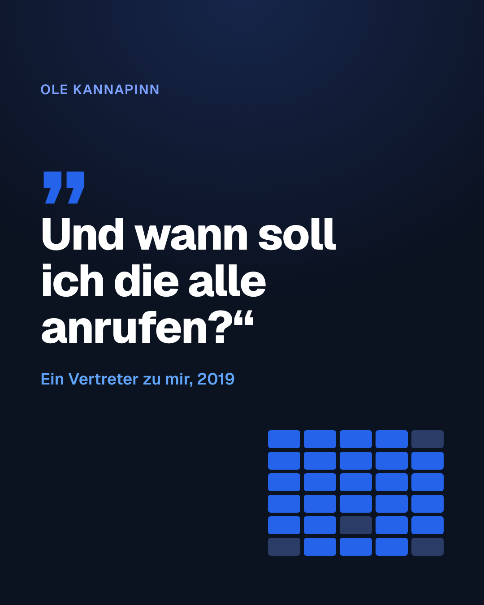
OK
Ole KannapinnErster Kommentar
Ich fange mal an. Mein Satz war ganz klar die Frage oben, „Und wann soll ich die alle anrufen?“. Die hat mir damals einfach gezeigt, dass der Lead allein noch gar nichts bringt, wenn danach keiner schnell genug drankommt.
Was du vor dem Posten bestätigen musst
AntwortzeitBestätigt.
Exklusivität und keine RohleadsStimmt ohne Ausnahme, auch über die Lieferantenrolle?
200.000 LeadsSeit 2019 oder 2020, über alle Kampagnen zusammengezählt?
Freigabe der Bot-TexteGibt der Vermittler die Texte des Assistenten vorher frei? (Post 1)
Preis im ErstgesprächNennst du im Erstgespräch einen Preis pro Termin? (Post 3)